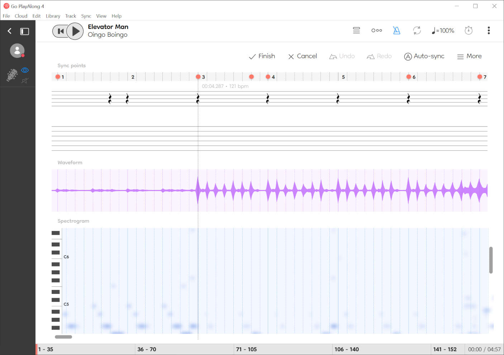

A song editor for "Frets On Fire"
Guitar Pro files have been a popular tablature format for many years, so they can be found on the Internet easily. They can even define drum tracks. One popular website is https://www.ultimate-guitar.com/. EOF is able to import Guitar Pro 5 (.gp5) and older versions of the format. The newer Guitar Pro formats (.gpx or .gp) aren’t understood by EOF at this time, but I hope to add support for .gp in the future. If you found a Guitar Pro file too new for EOF to support, you can try using the paid Guitar Pro 8 program (https://www.guitar-pro.com/) or the free TuxGuitar program (https://www.tuxguitar.app/) to export the tablature in GP5 format. Just be aware that these exports are not always flawless, so ideally you should check the imported results in EOF for any errors.
As discussed earlier in this tutorial, if you have exported Guitar Pro XML timing from Go PlayAlong:

You can import that into EOF and not have to manually beat sync the project. You can do this by using “File>Import>Guitar Pro” and browsing for the XML file you exported from Go PlayAlong. The XML file internally references the Guitar Pro file by name, so as long as the Guitar Pro file is named correctly, in the same folder as the Go PlayAlong XML file and in a supported format (.gp5 or older), EOF should be able to import the timing and then import the tablature. The catch is that since this import is primarily for guitar content, you have to change to one of the "PART REAL_BASS..." or "PART REAL_GUITAR..." tracks (ie. using the CTRL+Tab shortcut or the Song>Track> menu) in order for this import function to be usable, then when the list of importable tracks is listed, select the drum track and EOF will offer to import it into one or both of the drum tracks in the EOF project.
As an experimental newer feature, EOF can also import the AI-generated timing from a Guitar Pro transcription on Songsterr's website, but it may be a little convoluted to use. You can try this via the "File>Import>Songsterr timing" function after importing a Guitar Pro file from Songsterr's website (this might require converting the tablature file from .gp to .gp5 format). You'll need to find the URL for the tablature that you imported that will include s### and r### in the URL, where ### is replaced with the song and revision IDs respectively. Then when you paste this URL into the Songsterr timing function in EOF, it will format the URL to download a JSON file from Songsterr and launch that in the web browser. Then after you download that file, click the import function on that dialog back in EOF and browse to the JSON file to have it import the timing for each measure.
Otherwise if you are going to beat sync manually, you can decide whether to beat sync the project (as described in the [CREATING AND BEAT SYNCING A PROJECT] section) before or after importing a Guitar Pro file. If you beat sync before importing the content, make sure to look at the Guitar Pro file in Guitar Pro or TuxGuitar first to verify at which beat of which measure the notes begin. Measure 1 in the tablature will import into measure 1 in the EOF project, so you may want to take this into account. Some tablature files begin transcribing the guitar notes beginning in measure 1, while some define rest notes to reflect when there is a lead-in in the song before the guitar notes begin. If necessary, you can select all imported notes (CTRL+A), ensure grid snap is enabled (ie. Edit>Grid snap>1/4 to set a snap size of one beat in 4/4 meter) and click and drag the FIRST note to move the entire imported arrangement by one beat at a time in order to line up the notes with the audio. If you beat sync after importing the content, be careful not to accidentally make unintended changes to the notes such as by clicking and dragging them instead of the beat markers. When you are ready to import the tablature, change to the desired pro guitar track (using Song>Track or the CTRL+Tab shortcuts) and use “File>Import>Guitar Pro”.
EOF’s Guitar Pro import is reasonably reliable, but there are occasionally bugs such as when there are complex measure repeat patterns in the tablature or when a Guitar Pro 5 file was exported from a newer version of Guitar Pro (sometimes the GP5 file is written incorrectly due to a bug with Guitar Pro's or TuxGuitar's export function). Some special notations like triplet feel are also not supported. Usually though, if the file can open in the official Guitar Pro or in TuxGuitar, and it appears accurate, EOF should be able to import it accurately as well. As with other imports, test the beat sync during playback with the metronome (Edit>Metronome, or press the M key). Test note sync during playback with clap ("Edit>Claps" or press the C key). If you’re satisfied with the content, proceed to export to Smash Drums format [SMASH DRUMS EXPORT GUIDE]